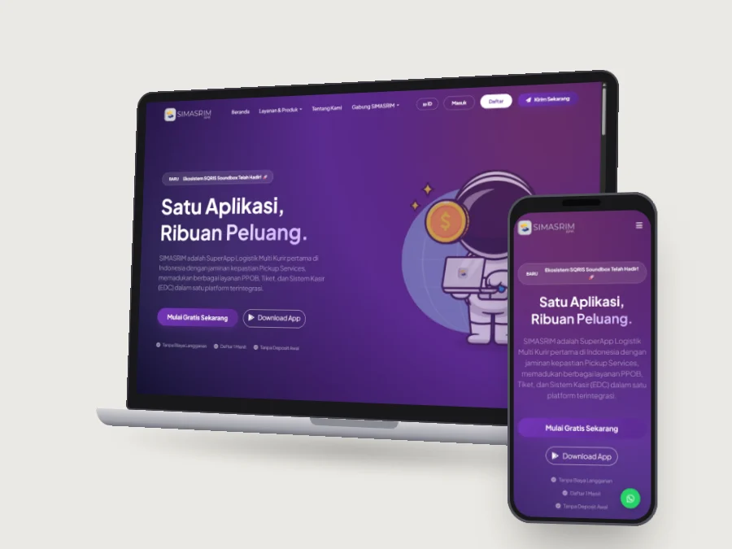
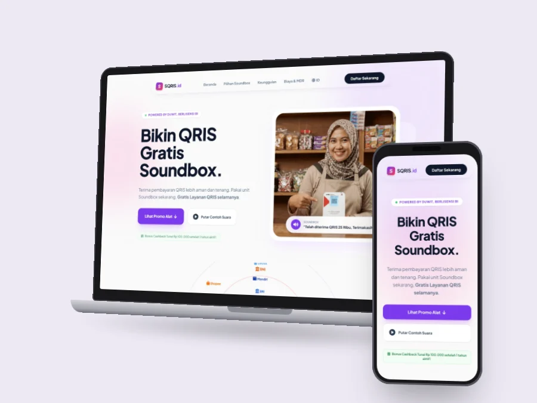
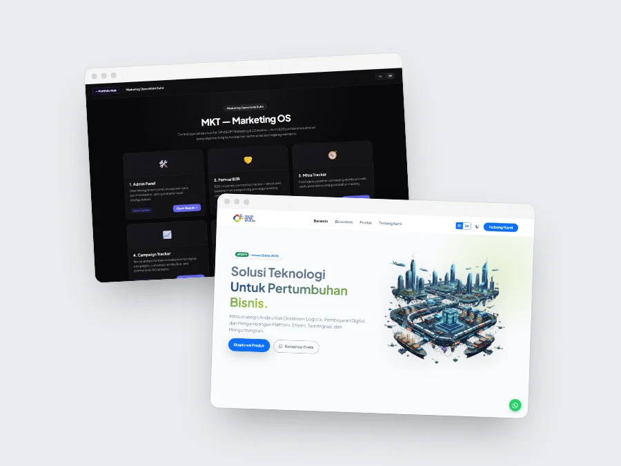

Dua tahun di PT Solusi Mitra Aplikasi (PT SMA), berawal dari tim Marketing lalu menjadi Koordinator Pemasaran & Bisnis untuk tim beranggota 3 orang. Tiap produk punya pekerjaan besarnya sendiri: desain UI/UX, situs yang akhirnya saya bangun sendiri, materi pemasaran, dan alat kerja internal.
Tiga produk utama

Super-app logistik multi kurir, PPOB, dan tiket. Dari desain UI/UX sampai membangun ulang simasrim.com sendiri.
Buka halaman →
QRIS dengan soundbox dan mesin kasir EDC untuk agen: situs, onboarding merchant, dan materi penjualan.
Buka halaman →
Situs perusahaan solusimitraaplikasi.com, identitas seragam, serta Marketing OS dan SMA-OS untuk tim.
Buka halaman →Produk lain di ekosistem · Arsip
Platform toko online cepat untuk UMKM. Saya merancang UI/UX-nya; versi awal dibangun tim IT dan versi terakhir (termasuk versi Inggris, Okt 2025) ikut saya kembangkan. Toko Murah (Okt 2024–Jan 2025) adalah toko di atas OrderMudah untuk produk mitra. Situsnya sudah tidak aktif.
Layanan pengemasan dan gudang. Saya membuat company profile, logo, landing page, dan format invoice. Sejak Sep 2025 diganti nama menjadi SIMASRIM Fulfillment.
Toko marketplace dan live streaming di bawah SIMASRIM: halaman link bio, profil host live, dan laporan data live marketplace.
Sudah dibahas di bagian lain
Supaya tidak diulang, hasil pemasaran dan kemitraan ada di studi kasus Growth, dan alat kerja tim ada di tab Bisnis.